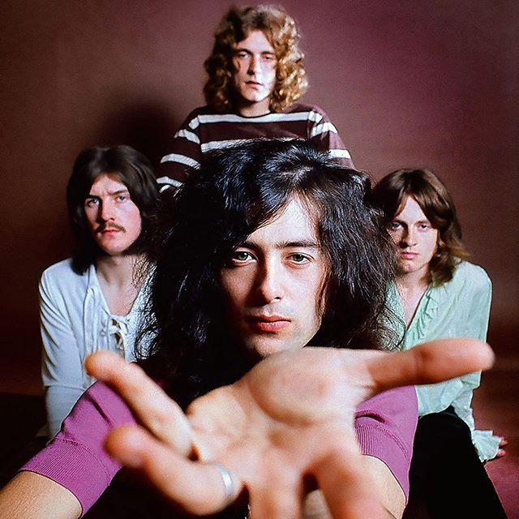
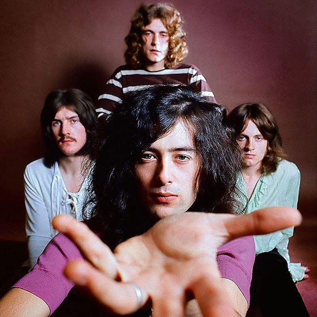

Explorando o Mundo do Rock
O rock é um gênero musical diversificado e influente que se originou nos Estados Unidos na década de 1950. Surgiu da fusão de vários estilos musicais, como rhythm and blues, country, gospel e folk. Ao longo das décadas, o rock evoluiu, dando origem a inúmeros subgêneros e estilos.
Desde o rock and roll dos anos 1950 até o grunge dos anos 1990, o rock abrange uma ampla variedade de sonoridades e temas. Bandas icônicas como The Beatles, Led Zeppelin, Alice In Chains, Pink Floyd e muitas outras deixaram uma marca duradoura na história da música.
 
